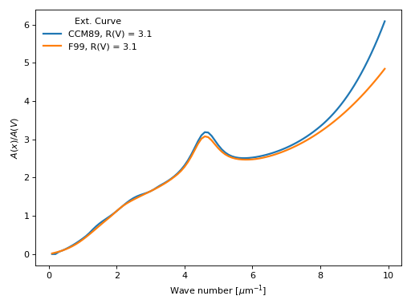
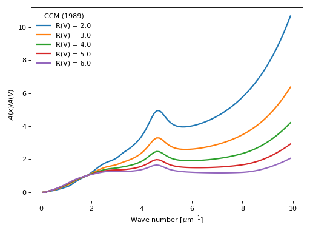
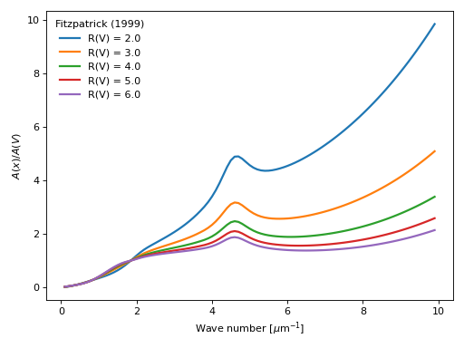

dustapprox package
Contents
dustapprox package#
Subpackages#
Submodules#
dustapprox.extinction module#
Dust Extinction curves#
The observations show a wide range of dust column normalized extinction curves, \(A(\lambda) / A(V)\). This package provides a common interface to many commonly used extinction curves.
Note
This module is able to handle values with units from pyphot.astropy (intefaced to this package) and astropy. We recommend the users to provide units in their inputs.
Example of comparing extinction curves
import numpy as np
import matplotlib.pyplot as plt
import astropy.units as u
from dustapprox.extinction import CCM89, F99
#define the wave numbers
x = np.arange(0.1, 10, 0.1) # in microns^{-1}
lamb = 1. / x * u.micron
curves = [CCM89(), F99()]
Rv = 3.1
for c in curves:
name = c.name
plt.plot(x, c(lamb, Rv=Rv), label=f'{name:s}, R(V) = {Rv:0.1f}', lw=2)
plt.xlabel(r'Wave number [$\mu$m$^{-1}$]')
plt.ylabel(r'$A(x)/A(V)$')
plt.legend(loc='upper left', frameon=False, title='Ext. Curve')
plt.tight_layout()
plt.show()
(Source code, png, hires.png, pdf)
{kind=link}
{kind=link}

- class dustapprox.extinction.CCM89[source]#
Bases:
dustapprox.extinction.ExtinctionLawCardelli, Clayton, & Mathis (1989) Milky Way R(V) dependent model.
from Cardelli, Clayton, and Mathis (1989, ApJ, 345, 245)
Example showing CCM89 curves for a range of R(V) values.
import numpy as np import matplotlib.pyplot as plt import astropy.units as u from dustapprox.extinction import CCM89 #define the wave numbers x = np.arange(0.1, 10, 0.1) # in microns^{-1} lamb = 1. / x * u.micron c = CCM89() Rvs = np.arange(2, 6.01, 1.) for Rv in Rvs: plt.plot(x, c(lamb, Rv=Rv), label=f'R(V) = {Rv:0.1f}', lw=2) plt.xlabel(r'Wave number [$\mu$m$^{-1}$]') plt.ylabel(r'$A(x)/A(V)$') plt.legend(loc='upper left', frameon=False, title='CCM (1989)') plt.tight_layout() plt.show()
(Source code, png, hires.png, pdf)

{kind=link}
{kind=link}
- class dustapprox.extinction.ExtinctionLaw[source]#
Bases:
objectTemplate function class
- name#
name of the curve
- Type
str
- Parameters
lamb (float, np.array, Quantity) – wavelength. User should prefer a Quantity which provides units.
- Returns
val – expected values of the law evaluated at lamb
- Return type
ndarray
- class dustapprox.extinction.F99[source]#
Bases:
dustapprox.extinction.ExtinctionLawFitzpatrick (1999, PASP, 111, 63) [1999PASP..111…63F]_
R(V) dependent extinction curve that explicitly deals with optical/NIR extinction being measured from broad/medium band photometry. Based on fm_unred.pro from the IDL astronomy library
- Parameters
lamb (float or ndarray(dtype=float) or Quantity) – wavelength at which evaluate the law. units are assumed to be Angstroms if not provided
Av (float, optional) – desired A(V) (default 1.0)
Rv (float, optional) – desired R(V) (default 3.1)
Alambda (bool, optional) – if set returns +2.5*1./log(10.)*tau, tau otherwise
- Returns
r – attenuation as a function of wavelength depending on Alambda option +2.5*1./log(10.)*tau, or tau
- Return type
float or ndarray(dtype=float)
Example showing F99 curves for a range of R(V) values.
import numpy as np import matplotlib.pyplot as plt import astropy.units as u from dustapprox.extinction import F99 #define the wave numbers x = np.arange(0.1, 10, 0.1) # in microns^{-1} lamb = 1. / x * u.micron c = F99() Rvs = np.arange(2, 6.01, 1.) for Rv in Rvs: plt.plot(x, c(lamb, Rv=Rv), label=f'R(V) = {Rv:0.1f}', lw=2) plt.xlabel(r'Wave number [$\mu$m$^{-1}$]') plt.ylabel(r'$A(x)/A(V)$') plt.legend(loc='upper left', frameon=False, title='Fitzpatrick (1999)') plt.tight_layout() plt.show()
(Source code, png, hires.png, pdf)

Note
this function assumed the wavelength in Anstroms if lamb is not a Quantity.
{kind=link}
{kind=link}